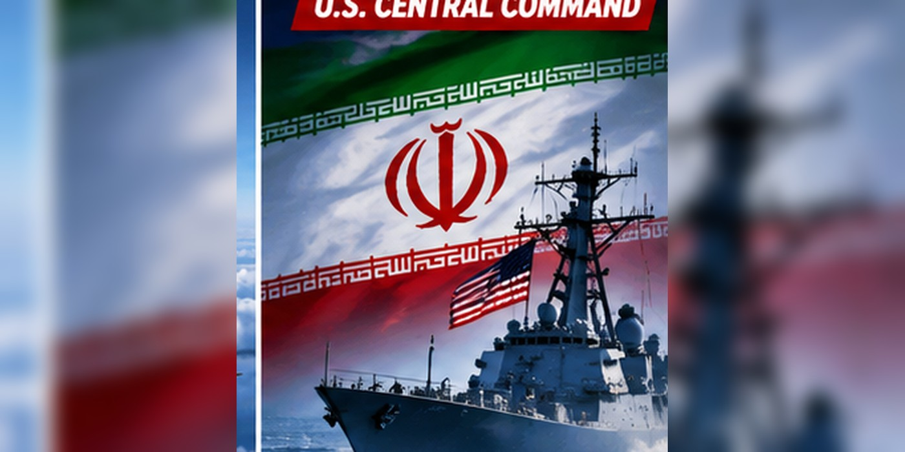

Task Force Iron Gate: What CENTCOM’s New Iran Land-Commerce Crackdown Would Target
U.S. Central Command is expanding its effort to restrict Iranian military-related commerce beyond sea routes.

A new mission beyond the sea
Reuters reported on November 7 that U.S. Central Command is establishing Task Force Iron Gate to target the movement of advanced weapons and sanctioned goods across Iran-linked land routes and the Caspian Sea.
What is the task force expected to do?
The Tampa-based effort is intended to coordinate among U.S. government agencies and focus on weapons, dual-use items and revenue streams that officials say support Iran’s military activities.
How does this differ from a naval blockade?
A maritime blockade focuses on sea traffic. A task force concerned with land commerce and Caspian routes would broaden monitoring and enforcement coordination, although specific methods and results remain to be seen.
What is not yet known?
The announcement does not establish that all Iranian trade will stop or that every shipment can be intercepted. The real effect depends on implementation, cooperation and future developments.